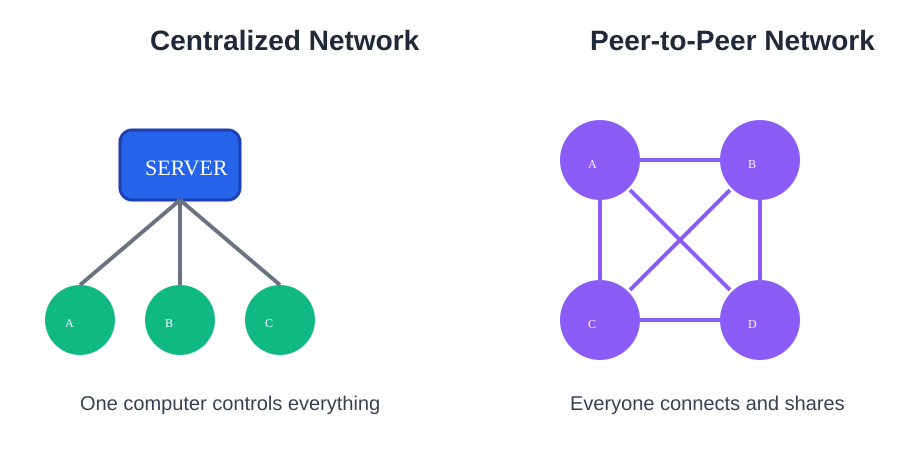

First question: how do computers usually talk❓
For a long time, computers talked using a simple rule:
👉 Everyone talks to one central computer.

This central computer is called a server.


📺 Example: Netflix
Netflix works like this:
- Netflix owns the movies
- Netflix stores everything
- You only receive data

If Netflix says “no”, you cannot watch. If Netflix goes down, everything stops.
🕰️ A short history of Peer-to-Peer
Engineers quickly noticed a problem:
Why should one computer do all the work?
Over time, a different idea appeared:
- 📡 Early internet forums (Usenet)
- 🎵 Music sharing (Napster)
- 📦 File sharing (BitTorrent)
The idea was simple:
👉 Let computers talk directly to each other.
🤝 What does “Peer-to-Peer” mean?
In a Peer-to-Peer network:
- There is no boss
- There is no central server
- Everyone is equal

Each computer is both:
🧑💻 a client (receives data)
🖥️ a server (shares data)
🧩 Example: sharing a TV series
Imagine a TV series split into pieces.
- 👩🦰 Alice has episode 1
- 👨🦱 Bob has episode 2
- 👩🦳 Carla has episode 3
👉 A new person joins and asks:
🧑💬 “Who has what?”
Everyone shares their piece. The full series is rebuilt.
💥 What if someone leaves?
In Peer-to-Peer networks, people can come and go at any time.
- Peers join the network
- Peers leave the network
- No single peer is critical
This works because important pieces are never stored in only one place.
When a peer receives a piece, it keeps a copy and shares it with others. Over time, each piece exists in many peers.
🧠 Think of it like a group conversation.
Important ideas are repeated by many people.
If one person leaves, the story is not lost.
⚖️ Pros & Cons
✅ Advantages
- No central control
- Hard to shut down
- Scales naturally
❌ Disadvantages
- Harder to coordinate
- More complex rules
- Can be misused
 Why this matters for Bitcoin ?
Why this matters for Bitcoin ?
Bitcoin uses Peer-to-Peer for one simple reason:
👉 There is no Bitcoin server.
Computers talk directly. They share transactions. They verify each other.
Without Peer-to-Peer, Bitcoin cannot exist.